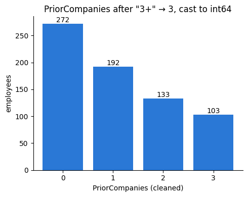
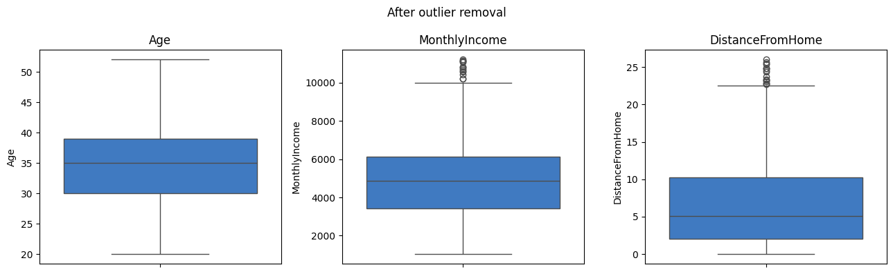
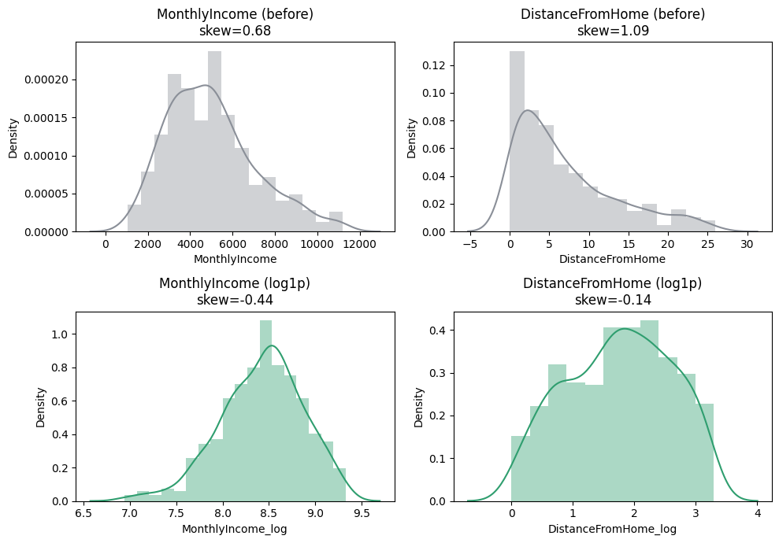
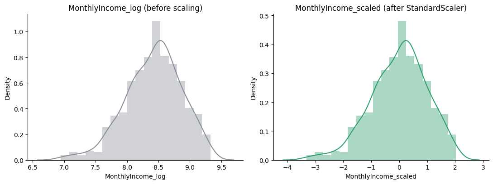

An HR team wanted to know who was likely to resign. They had one messy spreadsheet of employees.
Every technique needed here had already been practised alone — missing values, encoding, scaling, splitting, fitting.
Practised alone is not the same as sequenced correctly. The order matters, and one wrong ordering — transforming before splitting — silently inflates the score.
This project is where the pieces have to hold together as one pipeline, and where the review queue still records a real leakage defect worth fixing.
🔑 The one idea
A project is where cleaning, encoding, scaling, splitting and modelling stop being separate lessons.
20_Project.ipynb reused loans.csv, which happened to have zero
duplicate rows and no inconsistent text casing — two real techniques
from this course (17, and sub-skill #6 from 04_Data_Cleaning.MD,
"Dealing with Inconsistent Data") never got a real, messy example to
run on.
employee_attrition_raw.csv is a new, synthetic dataset (706 rows,
random seed 42, so it's reproducible), built on purpose so every
technique from 04–19 has something real to fix — including
duplicate rows and mixed-case text, which loans.csv never had.
Pipeline Architecture
flow diagram (rendered in the notebook)
flowchart TD
A["Raw CSV\nemployee_attrition_raw.csv\n706 rows x 12 cols"]
A --> B["1. Missing Values (06, 07, 08)\nnumeric cols only, median fill"]
B --> C["2. Duplicate Rows (17)\ndrop exact repeats"]
C --> D["3. Inconsistent Data (04, sub-skill 6)\nstandardize text casing"]
D --> E["4. Missing Values, part 2 (07)\ncategorical cols, mode fill\n(now safe to run)"]
E --> F["5. Fix Values & Dtype (18)\n'3+' to 3, cast to int64"]
F --> G["6. Outlier Detection (12, 13, 14)\nIQR + Z-score cross-check, remove"]
G --> H["7. Fix Skewed Shape (19)\nFunctionTransformer + log1p"]
H --> I["8. Feature Scaling (15, 16)\nStandardScaler + MinMaxScaler"]
I --> J["9. Encoding (09, 10, 11)\nOneHot + Ordinal + Label"]
J --> K["Final Model-Ready Table\nall numeric, no gaps, no dupes"]
style A fill:#8a8f98,stroke:#5f6368,color:#fff
style B fill:#2a78d6,stroke:#1a4d8f,color:#fff
style C fill:#2a78d6,stroke:#1a4d8f,color:#fff
style D fill:#2a78d6,stroke:#1a4d8f,color:#fff
style E fill:#2a78d6,stroke:#1a4d8f,color:#fff
style F fill:#2a78d6,stroke:#1a4d8f,color:#fff
style G fill:#b3781f,stroke:#7a5013,color:#fff
style H fill:#b3781f,stroke:#7a5013,color:#fff
style I fill:#2f9e6f,stroke:#1e6b4b,color:#fff
style J fill:#2f9e6f,stroke:#1e6b4b,color:#fff
style K fill:#d4a72c,stroke:#8f6e14,color:#fff
Color key: grey = raw input, blue = cleaning steps (fix what's
wrong with the data itself), amber = statistical steps (fix the shape
of the numbers), green = ML-prep steps (get numbers into the range/form
a model expects), gold = the finished output.
Why step 4 (categorical missing-value fill) comes after step 3
(inconsistent data), not before:Gender has values like "Male",
"male", "MALE", "Male " — four different strings, one real
category. Filling gaps with .mode()before cleaning that up asks
pandas "what's the most common exact string?", and a real category can
get split across several casing variants, undercounted, and shorted at
fill time. Clean the text first, so the mode-fill (and everything
downstream) is counting the right thing.
Data Dictionary — What's Wrong With Each Column, On Purpose
Column
Type
Issue injected
Fixed by
Notebook
EmployeeID
text
none — it's an identifier, not a feature
dropped in the final table
—
Age
number
some missing, a few fake ages (88–99)
median fill, IQR outlier removal
07, 13
Gender
text
missing values and mixed casing (Male/male/MALE/Male )
strip + standardize casing, then mode fill, then one-hot
04 (#6), 07, 09
Department
text
some missing; 5 real categories, no order
mode fill, one-hot
07, 09
Education
text
some missing; real order (High School < Bachelors < Masters < PhD)
mode fill, ordinal encode
07, 11
PriorCompanies
text-that-should-be-a-number
"3+" bucket, like loans.csv's Dependents
.replace() + .astype()
18
YearsAtCompany
number
some missing, right-skewed (many juniors, few veterans)
median fill, Min-Max scaled
07, 16
MonthlyIncome
number
some missing, strongly right-skewed, a handful of real high-earner outliers
median fill, IQR removal, log1p, standardized
07, 13, 19, 15
DistanceFromHome
number
some missing, right-skewed, a few extreme commuters
median fill, IQR removal, log1p, standardized
07, 13, 19, 15
OverTime
text
missing values and mixed casing (Yes/yes/YES)
strip + standardize casing, then mode fill, then one-hot
04 (#6), 07, 09
PerformanceRating
text
some missing; real order (Low < Medium < High < Excellent)
mode fill, ordinal encode
07, 11
Attrition
text
the target column — Yes/No, no missing values on purpose
label encode
10
Plus: 6 exact duplicate rows were appended on purpose (same
trick 17_Handling_Duploicate_Data.ipynb used on loans.csv, except
this time they're real from the start, not simulated afterward).
What The Code Notebook Does
Employee_Attrition_Pipeline.ipynb in this same folder follows the 9
stages above in order, with a visualization at every stage that has
something visual to show (missing-value bar chart, before/after box
plots for outliers, before/after distribution plots for the skew fix,
a correlation heatmap at the end). Every number quoted in its markdown
comes from actually running the cell above it — same rule as every
notebook before this one.
See ARCHITECTURE.md in this folder first — it has the pipeline
diagram and a full list of what's deliberately wrong with each column
in ../Data/employee_attrition_raw.csv. This notebook runs that pipeline,
stage by stage, with a real chart and real numbers at every step.
706 rows, 12 columns, one target (Attrition) — a synthetic
dataset (random seed 42, reproducible), built so every technique from
04 through 19 has something real to fix.
codecell 1
import pandas as pd
import numpy as np
import matplotlib.pyplot as plt
import seaborn as sns
from sklearn.preprocessing import (
FunctionTransformer,
StandardScaler,
MinMaxScaler,
OneHotEncoder,
OrdinalEncoder,
LabelEncoder,
)
EmployeeID Age Gender Department Education PriorCompanies \
0 E0390 24.0 Male Sales Bachelors 1
1 E0122 36.0 Male Marketing High School 1
2 E0523 46.0 Female Sales Bachelors 1
3 E0310 49.0 Male Sales Masters 3+
4 E0647 40.0 Female Engineering PhD 0
YearsAtCompany MonthlyIncome DistanceFromHome OverTime PerformanceRating \
0 1.2 8576.0 3.0 No Medium
1 29.3 4869.0 1.1 No Medium
2 4.6 1889.0 13.5 Yes Medium
3 1.2 19591.0 18.8 Yes Low
4 10.1 14041.0 NaN NO Medium
Attrition
0 No
1 No
2 Yes
3 No
4 No
706 rows, 12 columns. EmployeeID is just an identifier — no
predictive value, so it gets dropped from the final table. Everything
else either needs cleaning (missing values, messy text, wrong dtype,
outliers, skew) before it's usable, or is already the target.
codecell 7
dataset["Attrition"].value_counts()
Output
Attrition
No 500
Yes 206
Name: count, dtype: int64
500 stayed, 206 left — about 71% / 29%. Less lopsided than
../../_shared_data/loans.csv's 82%/18% target, but still worth knowing before anyone
trains a model on this later.
1. Missing Values — Numbers First (06, 07, 08)
Filling the 4 numeric columns now, with the median. The categorical
columns wait until Section 3, on purpose — see ARCHITECTURE.md for
why.
10 columns have gaps. EmployeeID and Attrition don't — an
identifier and the target were built with no missing values on
purpose, the same way ../../_shared_data/loans.csv's CoapplicantIncome had 0
missing in 19.
codecell 14
num_median_cols = ["Age", "YearsAtCompany", "MonthlyIncome", "DistanceFromHome"]
for c in num_median_cols:
dataset[c] = dataset[c].fillna(dataset[c].median())
dataset[num_median_cols].isnull().sum()
Output
Age 0
YearsAtCompany 0
MonthlyIncome 0
DistanceFromHome 0
dtype: int64
All 4 numeric columns at 0 missing now. The 6 categorical columns
still have gaps — that's expected, come back to them in Section 3.
2. Duplicate Rows (17)
Unlike ../../_shared_data/loans.csv, this dataset actually has some.
6 exact duplicate rows found and dropped — 706 → 700. Real
duplicates this time, not a simulated example like 17 had to build
on ../../_shared_data/loans.csv.
3. Fixing Inconsistent Data (04, Sub-Skill #6)
04_Data_Cleaning.MD names this as its own sub-skill, distinct from
missing values: data that's fully present, just written more than
one way. Gender and OverTime both have this problem — the exact
same real value spelled with different capitalization or stray spaces.
codecell 22
dataset["Gender"].value_counts()
Output
Gender
Male 356
Female 229
Male 23
male 21
MALE 19
FEMALE 17
female 11
Female 10
Name: count, dtype: int64
codecell 23
dataset["OverTime"].value_counts()
Output
OverTime
No 425
Yes 184
no 25
NO 24
yes 19
YES 16
Name: count, dtype: int64
Gender has 8 different spellings of 2 real categories
("Male", "male", "MALE", "Male ", and the same 4 for
"Female"). OverTime has 6 spellings of 2 categories. A computer
reads "Male" and "male" as two completely different strings — it
has no idea they mean the same thing unless told.
This is the concrete cost of skipping this step: one-hot encoding
Genderright now, before cleaning it, would create 8 columns —
one per spelling — instead of 2. Every downstream technique
(encoding, counting, grouping) silently breaks on inconsistent text.
Fix: strip stray spaces, then standardize capitalization.
8 → 2 columns for Gender, and OverTime is down to its real 2
categories as well. .str.strip() removes leading/trailing spaces;
.str.capitalize() forces the first letter uppercase and the rest
lowercase, so "MALE", "male", and "Male " all land on the same
"Male".
4. Missing Values — Categories Now (07)
Gender and OverTime are clean now, so it's finally safe to fill
every remaining categorical gap with the mode — no risk of the count
being split across casing variants anymore.
codecell 33
cat_mode_cols = ["Gender", "Department", "Education",
"PriorCompanies", "OverTime", "PerformanceRating"]
for c in cat_mode_cols:
dataset[c] = dataset[c].fillna(dataset[c].mode()[0])
dataset.isnull().sum().sum()
Output
np.int64(0)
0 — every gap in the dataset is filled.
5. Fixing Values & Data Types (18)
PriorCompanies has the exact same shape of problem 18 fixed on
../../_shared_data/loans.csv's Dependents: a "3+" bucket that isn't a number yet.
plt.figure(figsize=(5, 4))
counts = dataset["PriorCompanies"].value_counts().sort_index()
bars = plt.bar(counts.index.astype(str), counts.values, color="#2a78d6")
plt.xlabel("PriorCompanies (cleaned)")
plt.ylabel("employees")
plt.title('PriorCompanies after "3+" → 3, cast to int64')
for b in bars:
plt.text(b.get_x() + b.get_width() / 2, b.get_height() + 3,
str(int(b.get_height())), ha="center")
plt.gca().spines[["top", "right"]].set_visible(False)
plt.tight_layout()
plt.show()

Output from this notebook.
"3+" is gone, and the column is a plain int64 now.
6. Outlier Detection & Removal (12, 13, 14)
Three numeric columns checked: Age (a few fake ages up to 99),
MonthlyIncome, and DistanceFromHome (both built right-skewed with
some real extreme values).
codecell 41
outlier_cols = ["Age", "MonthlyIncome", "DistanceFromHome"]
fig, axes = plt.subplots(1, 3, figsize=(13, 4))
for ax, c in zip(axes, outlier_cols):
sns.boxplot(y=dataset[c], ax=ax, color="#8a8f98")
ax.set_title(c)
plt.suptitle("Before outlier removal")
plt.tight_layout()
plt.show()
for c in outlier_cols:
z = (dataset[c] - dataset[c].mean()) / dataset[c].std()
n_out = (z.abs() > 3).sum()
print(f"{c}: Z-score outliers(|z|>3)={n_out}")
Same pattern as 14 found on ../../_shared_data/loans.csv: IQR flags more than
Z-score on every one of these skewed columns (Age: 12 vs 5;
MonthlyIncome: 39 vs 9; DistanceFromHome: 34 vs 9) — the
mean and standard deviation Z-score relies on get stretched by the very
outliers they're supposed to catch, making the 3-standard-deviation
bar too lenient. Using the IQR result.
codecell 45
before_rows = dataset.shape[0]
mask = pd.Series(True, index=dataset.index)
for c in outlier_cols:
lo, hi = iqr_bounds[c]
mask &= (dataset[c] >= lo) & (dataset[c] <= hi)
dataset = dataset[mask].copy()
before_rows, dataset.shape[0]
Output
(700, 616)
700 → 616 rows — 84 dropped. Add up the 3 individual outlier
counts (12 + 39 + 34 = 85) and it's close to 84 but not exactly
equal: only 1 row was flagged as an outlier on more than one column
at once. Almost no overlap — these three columns are catching
different extreme rows, not the same ones three times.
codecell 47
fig, axes = plt.subplots(1, 3, figsize=(13, 4))
for ax, c in zip(axes, outlier_cols):
sns.boxplot(y=dataset[c], ax=ax, color="#2a78d6")
ax.set_title(c)
plt.suptitle("After outlier removal")
plt.tight_layout()
plt.show()

Output from this notebook.
7. Fixing Skewed Shape (19)
Same lesson as 19_Function_Transformer.ipynb: right-skewed money and
distance columns respond well to log1p.
codecell 49
skew_cols = ["MonthlyIncome", "DistanceFromHome"]
skew_before = {c: dataset[c].skew() for c in skew_cols}
skew_before
log_ft = FunctionTransformer(func=np.log1p)
for c in skew_cols:
dataset[c + "_log"] = log_ft.fit_transform(dataset[[c]])
skew_after = {c: dataset[c + "_log"].skew() for c in skew_cols}
skew_after
fig, axes = plt.subplots(2, 2, figsize=(10, 7))
for i, c in enumerate(skew_cols):
sns.distplot(dataset[c], ax=axes[0, i], color="#8a8f98")
axes[0, i].set_title(f"{c} (before)\nskew={skew_before[c]:.2f}")
sns.distplot(dataset[c + "_log"], ax=axes[1, i], color="#2f9e6f")
axes[1, i].set_title(f"{c} (log1p)\nskew={skew_after[c]:.2f}")
plt.tight_layout()
plt.show()
Output
/var/folders/07/ymtnct793nj_13sf3p9t0lqh0000gn/T/ipykernel_38049/219068399.py:4: UserWarning:
`distplot` is a deprecated function and will be removed in seaborn v0.14.0.
Please adapt your code to use either `displot` (a figure-level function with
similar flexibility) or `histplot` (an axes-level function for histograms).
For a guide to updating your code to use the new functions, please see
https://gist.github.com/mwaskom/de44147ed2974457ad6372750bbe5751
sns.distplot(dataset[c], ax=axes[0, i], color="#8a8f98")
/var/folders/07/ymtnct793nj_13sf3p9t0lqh0000gn/T/ipykernel_38049/219068399.py:7: UserWarning:
`distplot` is a deprecated function and will be removed in seaborn v0.14.0.
Please adapt your code to use either `displot` (a figure-level function with
similar flexibility) or `histplot` (an axes-level function for histograms).
For a guide to updating your code to use the new functions, please see
https://gist.github.com/mwaskom/de44147ed2974457ad6372750bbe5751
sns.distplot(dataset[c + "_log"], ax=axes[1, i], color="#2f9e6f")
/var/folders/07/ymtnct793nj_13sf3p9t0lqh0000gn/T/ipykernel_38049/219068399.py:4: UserWarning:
`distplot` is a deprecated function and will be removed in seaborn v0.14.0.
Please adapt your code to use either `displot` (a figure-level function with
similar flexibility) or `histplot` (an axes-level function for histograms).
For a guide to updating your code to use the new functions, please see
https://gist.github.com/mwaskom/de44147ed2974457ad6372750bbe5751
sns.distplot(dataset[c], ax=axes[0, i], color="#8a8f98")
/var/folders/07/ymtnct793nj_13sf3p9t0lqh0000gn/T/ipykernel_38049/219068399.py:7: UserWarning:
`distplot` is a deprecated function and will be removed in seaborn v0.14.0.
Please adapt your code to use either `displot` (a figure-level function with
similar flexibility) or `histplot` (an axes-level function for histograms).
For a guide to updating your code to use the new functions, please see
https://gist.github.com/mwaskom/de44147ed2974457ad6372750bbe5751
sns.distplot(dataset[c + "_log"], ax=axes[1, i], color="#2f9e6f")

Output from this notebook.
Column
Skew before
Skew after log1p
MonthlyIncome
0.68
-0.44
DistanceFromHome
1.09
-0.14
Both much closer to 0 — the same result 19 got on
CoapplicantIncome, on two brand-new columns.
8. Feature Scaling (15, 16)
StandardScaler on the two log1p columns (roughly bell-shaped now,
which is what standardization suits). MinMaxScaler on Age and
YearsAtCompany — both naturally bounded (an age, a tenure), which is
what min-max suits.
codecell 54
log_cols = [c + "_log" for c in skew_cols]
scaled_cols = [c + "_scaled" for c in skew_cols]
scaler = StandardScaler()
dataset[scaled_cols] = scaler.fit_transform(dataset[log_cols])
dataset[scaled_cols].mean().round(3), dataset[scaled_cols].std().round(3)
/var/folders/07/ymtnct793nj_13sf3p9t0lqh0000gn/T/ipykernel_38049/2549408374.py:2: UserWarning:
`distplot` is a deprecated function and will be removed in seaborn v0.14.0.
Please adapt your code to use either `displot` (a figure-level function with
similar flexibility) or `histplot` (an axes-level function for histograms).
For a guide to updating your code to use the new functions, please see
https://gist.github.com/mwaskom/de44147ed2974457ad6372750bbe5751
sns.distplot(dataset["MonthlyIncome_log"], ax=axes[0], color="#8a8f98")
/var/folders/07/ymtnct793nj_13sf3p9t0lqh0000gn/T/ipykernel_38049/2549408374.py:5: UserWarning:
`distplot` is a deprecated function and will be removed in seaborn v0.14.0.
Please adapt your code to use either `displot` (a figure-level function with
similar flexibility) or `histplot` (an axes-level function for histograms).
For a guide to updating your code to use the new functions, please see
https://gist.github.com/mwaskom/de44147ed2974457ad6372750bbe5751
sns.distplot(dataset["MonthlyIncome_scaled"], ax=axes[1], color="#2f9e6f")

Output from this notebook.
Same curve shape on both sides — scaling doesn't touch shape at all,
only the numbers on the x-axis. That's the difference between this
section and Section 7: log1p changed the shape (skew), and
StandardScaler here changes the range the values sit in, without
bending the curve any further.
Mean ≈ 0, standard deviation ≈ 1 on the standardized columns; 0
and 1 exactly on the min-max ones — checked directly, not assumed.
9. Encoding Categorical Variables (09, 10, 11)
Column(s)
Kind
Encoder
Why
Gender, OverTime, Department
nominal — no real order
OneHotEncoder (09)
a number would invent a fake ranking
Education, PerformanceRating
ordinal — a real ranking exists
OrdinalEncoder (11)
let the model see the real order
Attrition
the target
LabelEncoder (10)
this is what LabelEncoder is for
PriorCompanies doesn't appear here — it was already turned into
plain numbers in Section 5, the same reasoning 19's project used for
Dependents: its categories were digits in disguise, not real words.
drop="first" (the dummy-variable-trap fix from 09) drops one
category per column. Department had 5 categories, so it needed 4
columns, not 5 — Engineering is the dropped baseline here
(alphabetically first).
Education Education_ord PerformanceRating PerformanceRating_ord
0 Bachelors 1 Medium 1
1 High School 0 Medium 1
5 Bachelors 1 Excellent 3
8 High School 0 High 2
9 Masters 2 Excellent 3
10 PhD 3 High 2
11 PhD 3 Medium 1
12 High School 0 Excellent 3
14 Masters 2 Medium 1
15 Bachelors 1 Low 0
17 Masters 2 High 2
20 Bachelors 1 High 2
21 Masters 2 Low 0
37 High School 0 Low 0
54 PhD 3 Low 0
87 PhD 3 Excellent 3
Passing categories= explicitly is what makes this OrdinalEncoder
and not LabelEncoder — the order in the list ("High School"
first, "PhD" last) is the rank the model will see, chosen by us, not
alphabetical.
codecell 65
le = LabelEncoder()
dataset["Attrition"] = le.fit_transform(dataset["Attrition"])
le.classes_
Output
array(['No', 'Yes'], dtype=object)
["No", "Yes"] — alphabetical, so No → 0, Yes → 1. 1 now means
"left the company," matching the bar chart back in Section 0.
10. The Final, Model-Ready Table
Drop EmployeeID (an identifier, not a feature) and every in-between
column that already has a cleaned replacement.
Every column is int64 or float64 — no text, no gaps, no
duplicates. 706 raw rows became 616 (84 outliers, 6 duplicates
removed), and 12 raw columns became 14 (mostly from Department's
5 categories turning into 4 one-hot columns).
codecell 72
stages = {
"raw": 706,
"after dedup": 700,
"after outlier\nremoval": final_dataset.shape[0],
}
plt.figure(figsize=(6.5, 4.2))
bars = plt.bar(stages.keys(), stages.values(), color=["#8a8f98", "#8a8f98", "#2a78d6"])
plt.ylabel("rows")
plt.title("Row count through the pipeline")
for b in bars:
plt.text(b.get_x() + b.get_width() / 2, b.get_height() + 5,
str(int(b.get_height())), ha="center")
plt.gca().spines[["top", "right"]].set_visible(False)
plt.tight_layout()
plt.show()
OverTime_Yes correlates with Attrition at 0.36 — clearly the
strongest signal here, matching real HR-analytics intuition: employees
who regularly work overtime leave more often. Nothing else comes close
(MonthlyIncome_scaled is next, at -0.11 — higher pay, somewhat less
attrition). Unlike the ../../_shared_data/loans.csv project, where Credit_History
dominated everything, attrition here doesn't hinge on one obvious
column — a genuinely different, and more realistic, correlation
picture.
Summary
Step
What happened
Numbers
Missing values, numbers (06,07,08)
median fill
4 columns
Duplicates (17)
dropped exact repeats
706 → 700
Inconsistent data (04 #6)
standardized casing/whitespace
Gender one-hot: 8 → 2 cols
Missing values, categories (07)
mode fill, now safe
6 columns → 0 missing
Fix values/dtype (18)
"3+" → 3
PriorCompanies → int64
Outliers (12,13,14)
IQR fence, Z-score cross-checked
700 → 616 rows
Skew fix (19)
log1p
skew 0.68/1.09 → -0.44/-0.14
Scaling (15,16)
StandardScaler + MinMaxScaler
mean≈0/std≈1, min=0/max=1
Encoding (09,10,11)
one-hot, ordinal, label
5-category Department → 4 cols
Final table
dropped EmployeeID
616 rows × 14 columns, all numeric
Every technique from 04 through 19 ran here, on a dataset built to
actually need all of them — including the two, duplicates and
inconsistent text, that ../../_shared_data/loans.csv never had a real example of.
final_dataset is ready for a train/test split and a model — the
natural next notebook, not this one.
✍️ Handwritten notes
The pages written by hand while working through this topic — the version that came before the tidy write-up. Click any page to enlarge.